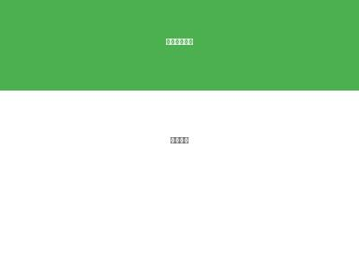
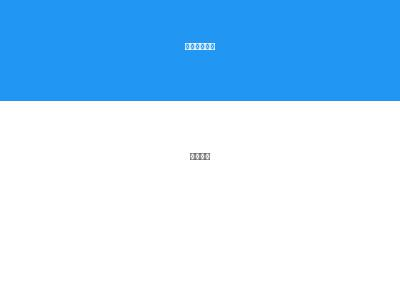
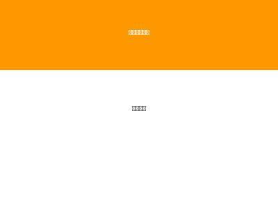
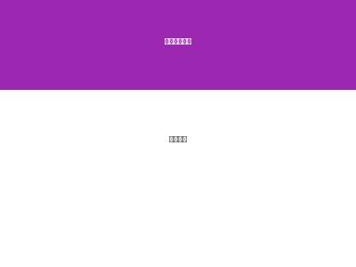
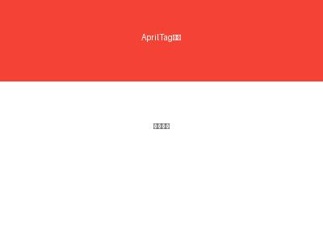

全身零点标定
标定机器人的初始零点位置
头手标定 (ETH)
标定头部视觉相对于手臂零点的坐标关系
⚠️
仪标定在线状态设备
1
确认安装工具
2
读取当前配置
3
初始化零点
4
移除辅助工装

🔧
安装工装
将辅助工装插入腿部的插销中

🔧
安装工装
将辅助工装插入脚部的插销中

🤖
摆好手臂
手臂自然下垂，摆正两边

🤖
摆正头部
头部左右居中，头部都面保持直立
数据标零覆盖...
·sence initialize......completed
·model import......completed
·device .......
初始化零点
全身零点标定
标定当前位机器人整体位姿为初始零点
关节零点标定
单独修改关节参数，点击「关节调试」，调试完成后自动保存标定
| 关节 | 当前位置 | 零点位置 | 偏移量 | 状态 |
|---|
⚠️
提示：修改参数时，整建议一次不超过0.05
✅
标定完成！可移除辅助工装
提示：「预览前」关注好机器人周围环境，以免摔倒
1
标定准备
2
头部&手臂标定
3
标定结果
基础检查：
⏳
权限问题：确保有sudo权限启动roscore的SSH连接
⏳
机器人设置：确认上电机器人后清理进程
⏳
网络连接：确保下位机能正常连接上位机
⏳
标定工具：确保标定工具正确安装且AprilTag可被识别
⏳
环境验证：确保虚拟环境已正确创建(运行 create_venv.sh)
⏳
AprilTag测量：确保相机能检测到AprilTag，光照条件适宜
⏳
rosbag文件：确保hand_move_demo_left.bag和hand_move_demo_right.bag文件存在正确路径
固定标定板/Apriltag：

📷
在标定板上工具上正确贴好AprilTag (ID=0)
AprilTag尺寸大小（默认为10厘米）打印正确的ArUco标记（默认ID为777）
将标定板安装标定工具上，并且保定标定工装在机器人末端执行器上
注意事项：
- 权限问题：
- 确保有sudo权限启动roscore的SSH连接
- 上位机需要root权限清理进程，确保root密码设置正确
- 网络连接： 确保下位机能正常连接上位机
- 标定工具： 确保标定工具正确安装且AprilTag可被识别
- 环境验证： 确保虚拟环境已正确创建(运行 create_venv.sh)
- AprilTag检测： 确保相机能检测到AprilTag，光照条件适宜
- rosbag文件： 确保手臂标定所需的rosbag文件位于正确位置
- ./scripts/joint_cali/bags/hand_move_demo_left.bag
- ./scripts/joint_cali/bags/hand_move_demo_right.bag
环境设置完成，开始头部标定...
·sence initialize......completed
·model import......completed
·device .......
✅
🎉 所有标定完成
❌
标定失败
故障排查
1. 保存零点
- 检查网络连接
- 确认上位机IP地址和密码
2. AprilTag识别失败：
- 检查相机是否正常工作
- 确认AprilTag是否在相机视野内
- 检查光照条件
3. 虚拟环境问题：
- 运行 sudo bash scripts/joint_cali/create_venv.sh 重新安装
4. 标定数据不足：
- 如果收集到的数据点数量为0，检查AprilTag是否被正确检测
- 检查头部追踪是否正常工作
- 调整rosbag播放速率（使用 --rate 参数）
5. 手臂标定失败：
- 检查rosbag文件是否存在且可播放
- 确认标定环境中的机器人位置与录制rosbag时一致
- 检查AprilTag立方体是否稳固安装
6. 第二次标定失败
- 若是出现 `跳过机器人控制系统启动`，需要开启新终端执行标定
- 在 `screen -r robot_control` 中结束程序运行
- 第二次标定卡在 `是否继续头部标定？(y/N):`，需要重启机器
7. 标定结果
- 运行第一次标定后，需要在 `screen -r robot_control` 中结束程序运行
- 第二次标定卡在 是否继续头部标定？(y/N):，需要重启机器